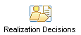

| Концепция: Developing Service-Oriented Solutions |
 |
|
RUP and Service Oriented Modeling and ArchitectureThe SOMA method was developed as an engagement model within IBM's Global Business Services group, and while public papers and descriptions were available it was primarily a method used by consultants in the field and not available to IBM customers. On the other hand the RUP is a commercial product offering from IBM which customers use to develop their own software development processes. This integrated method offering, RUP/SOMA has been developed to bring the unique aspects of SOMA to the RUP commercial method and make these available to commercial customers. The framework for RUP/SOMA is described by the picture below which demonstrates the key phases of the method, including the influences driving each phase and the artifacts produced. Note that the key artifact manipulated by the method is the Service Model (described below).
Service IdentificationService Identification is primarily an Elaboration time set of activities, focused on the identification of candidate services from the set of assets from both business and IT. The workflow for Service Identification is as follows:
The tasks identified within this set of activities are: Service SpecificationService Specification is primarily an Elaboration time set of activities, focused on the selection of candidate services that shall be developed into full services. These services are then allocated to subsystems also identified above and then decomposed into sets of componenents for implementation. The workflow for Service Specification is as follows:
The tasks identified within this set of activities are: Service RealizationService Realization is primarily a Construction time set of activities, focused on the completion of component design ready for component implementation. The workflow for Service Specification is as follows:  The tasks identified within this set of activities are: The Service ModelIn SOMA the Service Model is described using the picture below; it is a single, document based, work product that encompasses the different technical and lifecycle views of the services identified and specified during a project. The different sections of the service model are listed in more detail in the Artifact: Service Model in RUP/SOMA.
The RUP Artifact: Service Model is described in both a document form and a UML form (Template: Service Model in Word and Template: Service Model in UML) though it is more likely that a project will use elements of both of these forms in presenting the results of their work. |


© Copyright IBM Corp. 1987, 2006. Все права защищены.. |